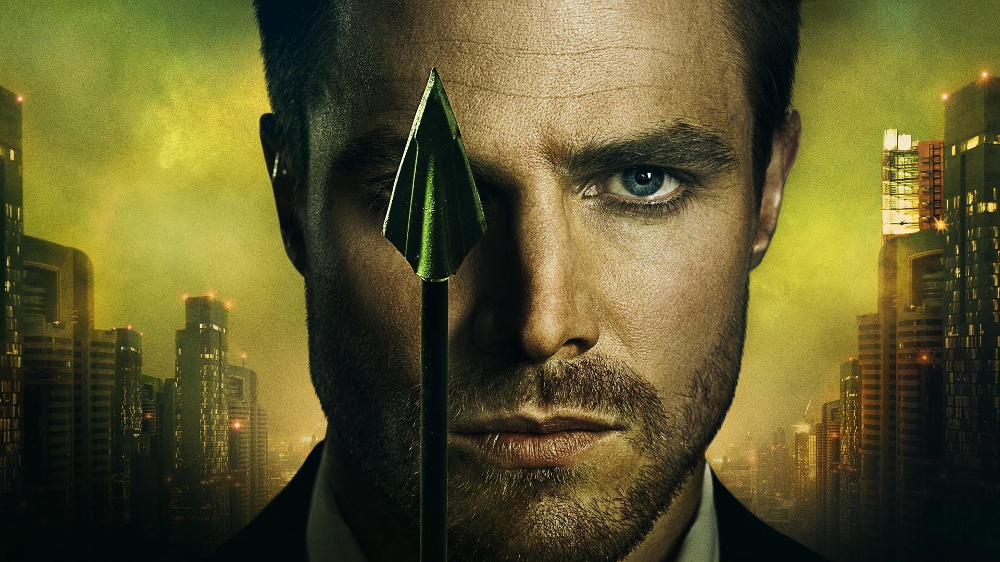

Arrow
Arrow is an American superhero television series developed by Greg Berlanti,
Marc Guggenheim, and Andrew Kreisberg based on the DC Comics character Green Arrow,
a costumed crime-fighter created by Mort Weisinger and George Papp, and is the first
series of the Arrowverse, sharing continuity with other related television series.
The series premiered in the United States on The CW on October 10, 2012, and ran for
eight seasons until January 28, 2020. Arrow was primarily filmed in Vancouver, British
Columbia, Canada.
Arrow follows billionaire playboy Oliver Queen (Stephen Amell),
who claimed to have spent five years shipwrecked on Lian Yu, a mysterious island in the
North China Sea, before returning home to Starling City (later renamed "Star City") to
fight crime and corruption as a secret vigilante whose weapon of choice is a bow and arrow.
Throughout the series, Oliver is joined by others, among them former soldier John Diggle
(David Ramsey), I.T. expert and skilled hacker Felicity Smoak (Emily Bett Rickards), former
assassin Sara Lance (Caity Lotz), aspiring vigilante Roy Harper (Colton Haynes), Oliver's
sister Thea (Willa Holland), and attorney-turned-vigilante Laurel Lance (Katie Cassidy).
During the first five seasons of the show, characters from Oliver's past appear in a
separate story arc based on Oliver's flashbacks. Starting with season seven, a series
of flash-forwards focus on Oliver's children William (Ben Lewis) and Mia (Katherine McNamara),
exploring how present events would affect their future and Green Arrow's legacy.
Plot
The series follows billionaire playboy Oliver Queen, who spent five years shipwrecked on
the mysterious island Lian Yu, before returning home to Starling City.
In season one,
Oliver returns to Starling City and is reunited with his family and friends, including Tommy
Merlyn and Laurel Lance. By night, he acts as a vigilante, known as "The Hood", hunting down
those listed in his father's notebook, with assistance from John Diggle and Felicity Smoak. A
conspiracy known as "The Undertaking", led by Malcolm Merlyn, threatens the city. The season also
features flashbacks to Oliver's first year on the island, and his struggle to survive, alongside
both new allies, including Slade Wilson, and foes.
Source: Wikipedia